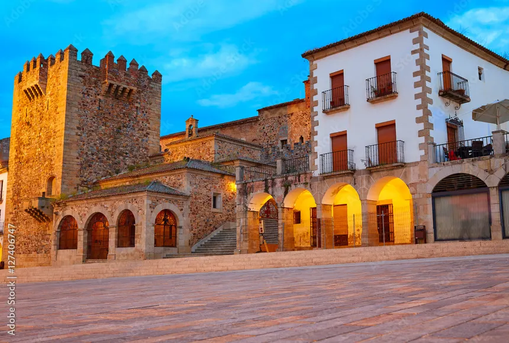

Plaza Mayor
Corazón de la ciudad con los Arcos de la Estrella y Torre de Bujaco...
Descubre el Casco Antiguo, la naturaleza extremeña y la cultura cacereña
Descubre la Ciudad Monumental declarada Patrimonio de la Humanidad por la UNESCO
Corazón de la ciudad con los Arcos de la Estrella y Torre de Bujaco...

Catedral del siglo XIII con impresionante arquitectura gótica...

Sede del Museo de Cáceres con aljibe almohade del siglo XII...
Explora los parques naturales y entornos naturales de Cáceres

Reserva de la biosfera con increíble fauna y flora mediterránea...

Pulmón verde de la ciudad con zonas de paseo y recreo...
Senda natural perfecta para senderismo y observación de aves...
Museos, centros culturales y galerías de arte cacereñas

Colección arqueológica, etnográfica y de bellas artes...

Arte contemporáneo en un espacio moderno excepcional...
Programación de teatro, danza, música y artes escénicas...
Eventos, rutas y experiencias únicas en Cáceres

Festival internacional de música del mundo en mayo...

Descubre las bodegas y la gastronomía local extremeña...

Recorrido por el casco antiguo con actores y leyendas...
Encuentra todos los lugares turísticos en el mapa
Plaza Mayor, s/n
10003 Cáceres, España
turismo@ayto-caceres.es
info@turismocaceres.org
+34 927 010 834
Horario: 10:00 - 14:00 / 17:00 - 20:00
Plaza Mayor
Torre de Bujaco
Centro de Interpretación
Tu opinión nos ayuda a mejorar